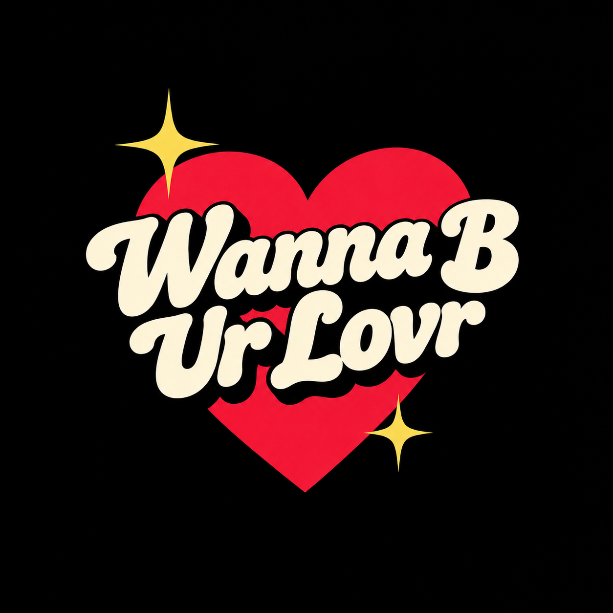

Imagem modificada com ajuda da inteligência artificial
“Wanna B Ur Lovr” é uma música original do álbum Poodle Hat, lançado por “Weird Al” Yankovic em 2003. A faixa é uma paródia de estilo inspirada na sonoridade de Beck durante a fase do álbum Midnite Vultures, combinada com elementos associados ao músico Prince. A própria grafia do título, com abreviações e letras estilizadas, faz referência à maneira como Prince costumava nomear algumas de suas músicas.
A letra é composta principalmente por cantadas absurdas, ruins e cada vez mais sugestivas, nas quais o narrador tenta conquistar alguém utilizando elogios estranhos e comparações inesperadas. Entre as referências aparecem salgadinhos Fritos, cereais Lucky Charms, a estátua Vênus de Milo e o vulcão Krakatoa. O humor surge justamente da combinação entre a confiança exagerada do personagem e a falta de sentido de suas tentativas de sedução.
Yankovic explicou a inspiração da música com uma descrição bastante específica: a intenção era fazer com que a faixa soasse como ele próprio tentando imitar Beck, que por sua vez estaria tentando imitar Prince. Essa mistura de referências ajuda a explicar tanto a sonoridade quanto o título peculiar da composição. Há também um pequeno efeito sonoro semelhante ao de um videogame antigo de oito bits após o verso em que o narrador compara o cheiro de uma mulher ao de Fritos.
Nas apresentações ao vivo, Al costuma levar a interpretação cômica ainda mais longe, fingindo seduzir mulheres na plateia. Assim, “Wanna B Ur Lovr” combina uma sonoridade inspirada no funk e no pop experimental com uma sequência de cantadas ridículas, transformando a tentativa de conquistar alguém em uma performance deliberadamente constrangedora.
I don't have a library card
But do you mind if I check you out?
I like your skeletal structure, baby
You're an ectomorph, no doubt
Your face is real symmetrical
And your nostrils are so nice
I wish that I was cross-eyed
So I could see you twice
Girl, you smell like Fritos
That's why I'm giving you this hungry stare
You're so hot, you're gonna melt
The elastic in my underwear
I'll bet you're magically delicious
Like a bowl of Lucky Charms
You'd look like Venus de Milo
If I just cut off your arms
What I'm tryin' to say is...
I wanna be your lover, baby
I need somebody to love
You know I just wanna be your lover, baby
Now I need somebody to love
Do you believe in love at first sight
Or should I walk by again?
My love for you's like diarrhea
I just can't hold it in
Stop, drop and roll now
'Cause baby, you're on fire
I'll bet your outfit
Makes a lot of noise in the dryer
You're absolutely perfect
Don't speak now, you might spoil it
Your eyes are even bluer
Than the water in my toilet
Say, has anyone ever told you
You've got Yugoslavian hands?
No, of course not, that would be stupid
Just forget I ever brought it up
The point I'm trying to make is...
I wanna be your lover, baby
I need somebody to love
You know I just wanna be your lover, baby
Now I need somebody to love
I wanna be your Krakatoa
Let my lava flow all over you
I wanna be your anaconda
And your heat-seeking missile too
I wanna be your beef burrito
Am I making this perfectly clear?
I wanna be your love torpedo
Are you picking up the subtle innuendo here?
Uh huh
I hope I'm not being forward
But do you mind if I chew on your butt?
You can tell me truthfully
Am I a steamin' hunk of love now, or what?
There just aren't enough o's in "smooth"
To describe how smooth I am
Maybe you've seen my picture
It's in the dictionary under "Kablaam!"
My lips are registered weapons
Can I invade your personal space?
You must have fallen from heaven
That would explain how you messed up your face
Well, how'd you get through security?
'Cause baby, you're the bomb
I'd like to take you home right now
So you can meet my mom
Because I...
I wanna be your lover, baby
I need somebody to love
You know I just wanna be your lover, baby
Now I need somebody to love
Girl, you must be Jamaican
Because Jamaican me crazy
Girl, you must be Jamaican
Because Jamaican me crazy
I wanna be your lover, baby
I need somebody to love
You know I just wanna be your lover, baby
Now I need somebody to love